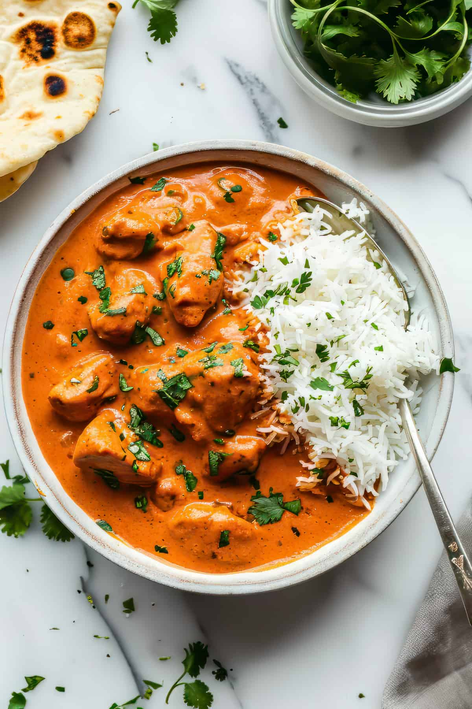

Butter Chicken

Description
Butter Chicken, also known as Murgh Makhani, is a popular North Indian dish known for its creamy tomato-based gravy. Tender chicken pieces are marinated in yogurt and spices, then cooked and simmered in a rich sauce made with butter, tomato puree, cream, and ground cashews.
Ingredients
- Chicken (boneless, cut into cubes or pieces)
- Yogurt (plain, preferably Greek yogurt)
- Ginger-garlic paste
- Butter
- Tomatoes (pureed or finely chopped)
- Cream (heavy cream or whipping cream)
- Cashew nuts (ground into a paste)
- Spices:
- Cumin powder
- Coriander powder
- Garam masala
- Kashmiri red chili powder (for color)
- Sugar (optional, to balance flavors)
- Kasuri methi (dried fenugreek leaves, optional)
- Salt (to taste)
- Fresh cilantro leaves (for garnish)
Steps:
- Marinate the chicken pieces in yogurt, ginger-garlic paste, and a pinch of salt for at least 30 minutes.
- Heat butter in a pan over medium heat.
- Add the marinated chicken pieces and cook until they are lightly browned and cooked through. Remove the chicken and set aside.
- In the same pan, add more butter if needed and sauté the ginger-garlic paste until fragrant.
- Add the tomato puree and cook until the butter starts to separate from the tomato mixture.
- Stir in the ground cashew nut paste and cook for a few minutes.
- Add cumin powder, coriander powder, garam masala, and Kashmiri red chili powder. Cook the spices for a minute or two.
- Return the cooked chicken pieces to the pan and mix well with the sauce.
- Stir in cream, sugar (if using), and kasuri methi (dried fenugreek leaves). Simmer for 5-10 minutes until the sauce thickens to your desired consistency.
- Adjust salt to taste.
- Garnish with fresh cilantro leaves.
- Serve hot with naan, rice, or roti.